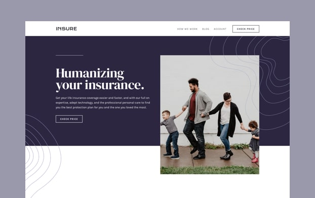
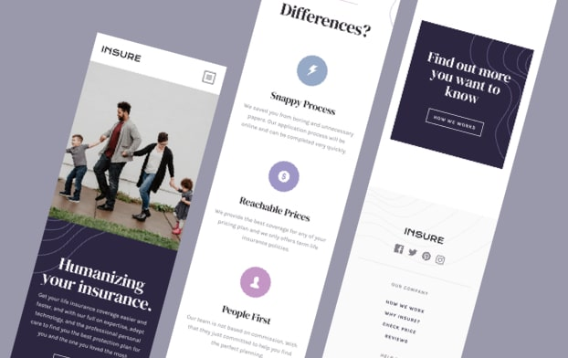
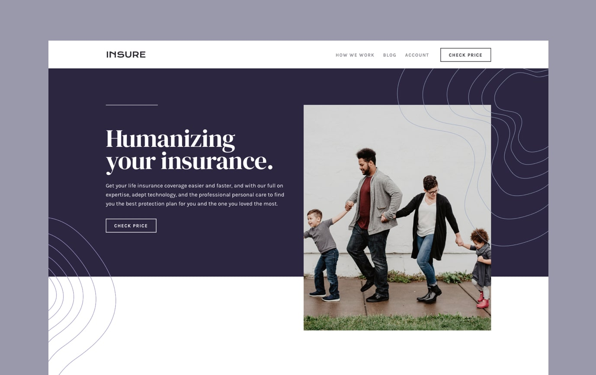
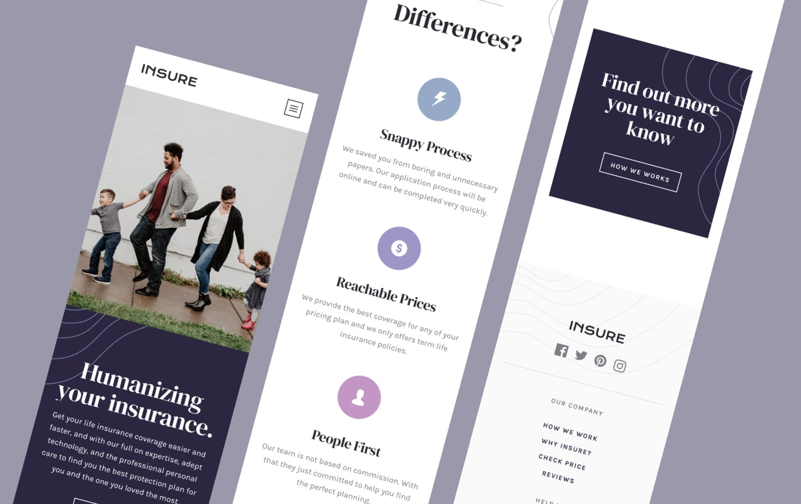

Insure
This was a small project which mostly consisted of HTML and CSS. I built a fully-responsive landing page. The only JavaScript this project required was to enable the toggling of the mobile navigation.
Interesting design / Front end development
HTML / CSS / JS
Visit Website
Project background
This project was a front-end challenge from Frontend Mentor. It’s a platform that enables you to practice building websites to a design and project brief. Each challenge includes mobile and desktop designs to show how the website should look at different screen sizes. Creating these projects has helped me refine my workflow and solve real-world coding problems. I’ve learned something new with each project, helping me to improve and adapt my style.
Static previews
   

Fylo
Previous project
Next project
Interested in doing a project together?